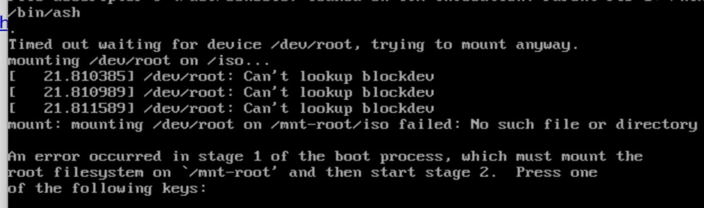

20250209
1. laptop environment
Re-install hyper-v, wsl after windows upgrading.
Hyper-v manually installation:
file: hyperv.cmd(run as adminstrator);
pushd "%~dp0"
dir /b %SystemRoot%\servicing\Packages\*Hyper-V*.mum >hyper-v.txt
for /f %%i in ('findstr /i . hyper-v.txt 2^>nul') do dism /online /norestart /add-package:"%SystemRoot%\servicing\Packages\%%i"
del hyper-v.txt
Dism /online /enable-feature /featurename:Microsoft-Hyper-V-All /LimitAccess /ALL
After installation, the machine should be restarted.
2. hyper-v nixos aarch64
Download the iso from https://releases.nixos.org/nixos/24.11/nixos-24.11.714127.f5a32fa27df9/nixos-minimal-24.11.714127.f5a32fa27df9-aarch64-linux.iso.
Issue with minimum iso:

Change to gnome iso which is downloaded from https://releases.nixos.org/nixos/24.11/nixos-24.11.714127.f5a32fa27df9/nixos-gnome-24.11.714127.f5a32fa27df9-aarch64-linux.iso:
parted the disk:
parted /dev/sda -- mklabel gpt
parted /dev/sda -- mkpart ESP fat32 1MB 512MB
parted /dev/sda -- mkpart primary 512MB -2GB
parted /dev/sda -- mkpart swap linux-swap -2GB 100%
parted /dev/sda -- set 1 esp on
mkfs.fat -F 32 -n boot /dev/sda1
mkfs.btrfs -L NIXOS /dev/sda2
mkswap -L swap /dev/sda3
mount the formated disk:
mount /dev/disk/by-label/NIXOS /mnt
mkdir -p /mnt/boot
mount /dev/disk/by-label/boot /mnt/boot
swapon /dev/sda3
Refresh the channel:
nix-channel --add https://mirrors.ustc.edu.cn/nix-channels/nixpkgs-unstable nixpkgs
nix-channel --add https://mirrors.ustc.edu.cn/nix-channels/nixos-24.11 nixos
nix-channel --list
nix-channel --update
nixos-rebuild --option substituters https://mirrors.ustc.edu.cn/nix-channels/store switch --upgrade
Generate a basic configuration:
nixos-generate-config --root /mnt
Edit the generated configuration.nix file:
{ config, lib, pkgs, ... }:
{
imports =
[ # Include the results of the hardware scan.
./hardware-configuration.nix
];
# Use the systemd-boot EFI boot loader.
boot.loader.systemd-boot.enable = true;
boot.loader.efi.canTouchEfiVariables = true;
boot.kernelParams = [
"quiet"
"splash"
"video=hyperv_fb:1920x1080"
];
# awesome desktop wm
services={
xserver = {
enable = true;
windowManager.awesome = {
enable = true;
luaModules = with pkgs.luaPackages; [
luarocks # is the package manager for Lua modules
luadbi-mysql # Database abstraction layer
];
};
};
displayManager = {
sddm.enable = true;
defaultSession = "none+awesome";
};
};
nix.settings.substituters = [ "https://mirrors.ustc.edu.cn/nix-channels/store" ];
nixpkgs.config.allowUnfree = true;
networking.hostName = "nixos"; # Define your hostname.
time.timeZone = "Asia/Shanghai";
virtualisation.hypervGuest = {
enable = true;
};
users.mutableUsers = false; # 禁止useradd添加用户
#security.sudo.wheelNeedsPassword = false;
users.users.dash= { #用户名是yh
isNormalUser = true;
hashedPassword = "xxxxxxxxxxxxxxxxx";
extraGroups = [
"wheel"
"users"
];
};
environment.systemPackages = with pkgs; [
wget
curl
unzip
vim
];
services.openssh.enable = true;
services.pipewire = {
enable = true;
pulse.enable = true;
};
system.stateVersion = "24.11"; # Did you read the comment?
}
The hashedPassword is generated via:
mkpasswd -m sha-512
With this modified configuration file, do following:
cd /mnt
nixos-install --show-trace --option substituters https://mirror.sjtu.edu.cn/nix-channels/store
After installation, it will hints your with set passwd for root.
3. default kernel for nixos
Get from the https://github.com/NixOS/nixpkgs/blob/nixos-24.11/pkgs/top-level/linux-kernels.nix, the default kernel is:
packageAliases = {
linux_default = packages.linux_6_6;
# Update this when adding the newest kernel major version!
linux_latest = packages.linux_6_13;
linux_mptcp = throw "'linux_mptcp' has been moved to https://github.com/teto/mptcp-flake";
linux_rt_default = packages.linux_rt_5_15;
linux_rt_latest = packages.linux_rt_6_6;
};
you could switch the kernel in configuration.nix:
#boot.kernelPackages = pkgs.linuxPackages_latest;